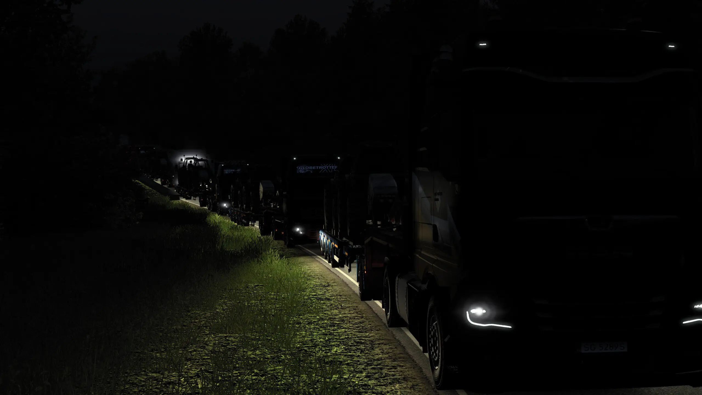
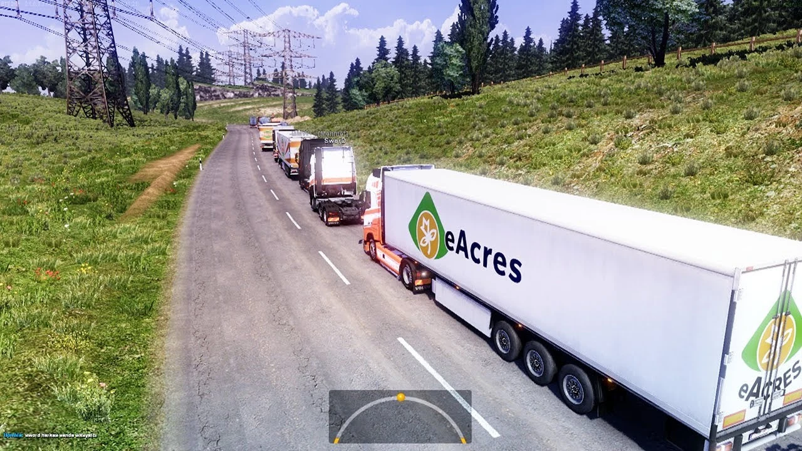

 Как найти команду в ETS2 и вступить в VTC 2025 · GRR Logistics Всё про VTC, колонны и как вступить в команду. Если ты устал катать в одиночку — эта статья для тебя. Читать
 Гайд по TruckersMP — мультиплеер в ETS2 2025 · GRR Logistics Как установить TruckersMP, подключиться к серверам и катать с другими водителями. Полный гайд для новичков. Читать
Какой нужен ПК для ETS2 и как поднять FPS 2025 · GRR Logistics Системные требования, советы по графике и FPS без модов. Как сделать ETS2 плавным на любом ПК. Читать